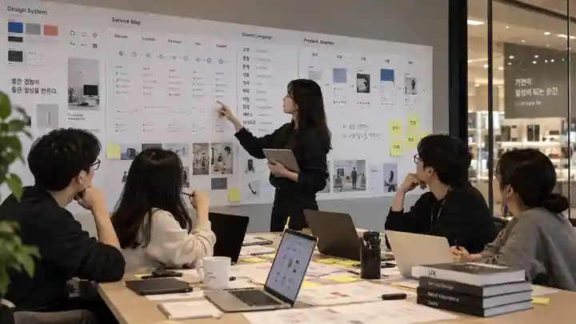

하이마트 온라인 전체 구매 여정을 처음부터 재설계했습니다.
LOTTE HIMART 2024.07—NOW
LOTTE HIMART 2024.07—NOW
LOTTE HIMART 2024.07—NOW
LOTTE HIMART 2024.07—NOW
LOTTE HIMART 2024.07—NOW

LOTTE HIMART 2024.07—NOW

AIMMO 2022-2024
AIMMO 2022-2024
YANOLJA 2020-2021
YANOLJA 2020.07—2021.01
NBT 2017.08—2020.03
COUPANG 2013—2016

VINYL 2009—2013